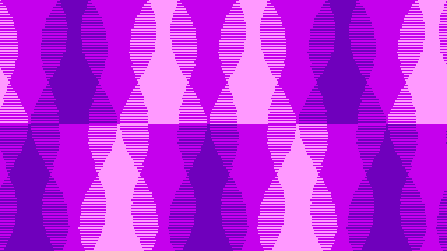

Dj Clips Ultimate Pipe Dream is my current longterm project,
a jrpg about an esoteric musician dealing with a cursed talking hat.
Yard Tale
march - may 2018
roles: UI design, npc dialogue,
presskit-site, trailer
lang: c# (unity3d)
project site
march - may 2018
roles: UI design, npc dialogue,
presskit-site, trailer
lang: c# (unity3d)
project site

Yard Tale is the seminal release of Froiktown collective, a fun and quirky game about using magic to help make sales at a local yard sale.
Cryptid Low-cation
July 2018
roles: code, netcode, art, design
langs: c#(unity3d) php mysql
project site
July 2018
roles: code, netcode, art, design
langs: c#(unity3d) php mysql
project site

Cryptid Low-cation is a Froiktown gamejam release, a sort of
prototype monster generator / mmo. Creatures made by players are uploaded
online when created and players can meet and greet with each other's
cryptids. This was a test to see how simple it would be to create simple
online functionality in a Unity project.

Lovely Gwepos is a gamejam project about a multilayered
virtual pet purgatory. Put together in about a week as my first
deep dive into Unity.

@wavy_bgs is a twitter bot written with pygame that generates
and tweets out animated gifs reminiscant of battle backgrounds from
earthbound